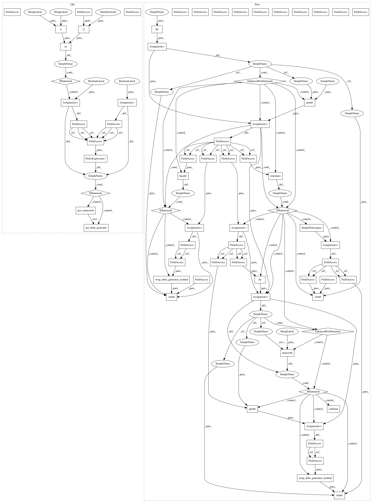

fdfc3dcfe56e44e979626fb24c106905d25ec7c5,lib/streamlit/__init__.py,,,#,206
Before Change
// For whatever reason, sys.argv[0] is different based on python version.
// * Python 2.7 = "-c"
// * Python 3.6 = "-m"
_this_may_be_proxy = False
if sys.argv[0] in ("-m", "-c"):
_this_may_be_proxy = True
// In order to log all exceptions etc to the streamlit report after
// `import streamlit` we establish the proxy by calling get_connection().
// If there"s any chance that this is the proxy (i.e. _this_may_be_proxy) then we
// skip this step. Overcautiously skipping this step isn"t fatal in general as
// it simply implies that the connection may be established later.
if not _this_may_be_proxy:
Connection.get_connection().get_delta_generator()
////// DEPRECATION WARNING //////
// Everything below this point exists TEMPORARILY to emulate the old io
// module and to emit a deprecation warning in case someone uses it.
def _IO_show_warning(func):
@functools.wraps(func)
def wrapped(io_obj, *args, **kwargs):
if not io_obj._emitted_deprecation_warning:
After Change
return method(dg, *args, **kwargs)
return wrapped_method
for name in dir(DeltaGenerator):
member = getattr(DeltaGenerator, name)
if hasattr(member, EXPORT_TO_IO_FLAG):
method = member
// We introduce this level of indirection to wrap "method" in a closure.
setattr(this_module, name, wrap_delta_generator_method(method))
if isinstance(member, SimpleNamespace):
orig_ns = member
ns = SimpleNamespace()
setattr(this_module, name, ns)
for subname in dir(orig_ns):
if subname.startswith("_"): continue
method = getattr(orig_ns, subname)
setattr(ns, subname, wrap_delta_generator_method(method))
def write(*args):
Writes its arguments to the Report.
Prints its arguments to the current Report. Unlike other streamlit
In pattern: SUPERPATTERN
Frequency: 3
Non-data size: 69
Instances
Project Name: streamlit/streamlit
Commit Name: fdfc3dcfe56e44e979626fb24c106905d25ec7c5
Time: 2018-08-13
Author: thiagot@gmail.com
File Name: lib/streamlit/__init__.py
Class Name:
Method Name:
Project Name: streamlit/streamlit
Commit Name: fdfc3dcfe56e44e979626fb24c106905d25ec7c5
Time: 2018-08-13
Author: thiagot@gmail.com
File Name: lib/streamlit/__init__.py
Class Name:
Method Name:
Project Name: streamlit/streamlit
Commit Name: 0ad8d100160d4b7983ba7c5bea119952fddd5ec9
Time: 2018-08-14
Author: thiagot@gmail.com
File Name: lib/streamlit/__init__.py
Class Name:
Method Name:
Project Name: streamlit/streamlit
Commit Name: 1d70327b2d9a2303403d80fe15e9a9d2b39f86fc
Time: 2018-08-16
Author: thiagot@gmail.com
File Name: lib/streamlit/__init__.py
Class Name:
Method Name: